Author: fungidelight
Origin: Modpack Link
Versions: MC = 1.15.2 - Pack = 1.12.4
Presentation
Natural History Museum is a collectathon modpack that will have you scour the world of all the different samples to display.
It’s fairly short and easy, mostly to fill your collecting compulsions.
Overview
Setting Up the Foundations
I started in a forest, so I decide to name the world Leaf Town. There’s a lot to prepare for the museum to be ready. It begins humbly, I have to learn how to make tools similarly to tinkers but using blueprints directly.
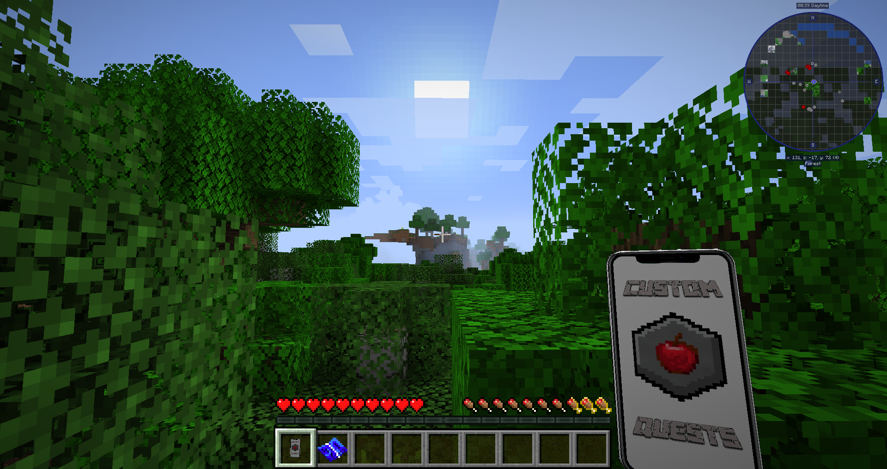
I set up a base camp and mine a bit to finish the first quest. To my surprise, there are gigantic lava lake caves under my spot, this makes it easier to find the rarer ores. There are interesting spawners everywhere in the deep caves that summon a wave of enemies to defeat, using the spoils I decide to start the trees display branch, but ultimately find out I will need a lot more badges first.
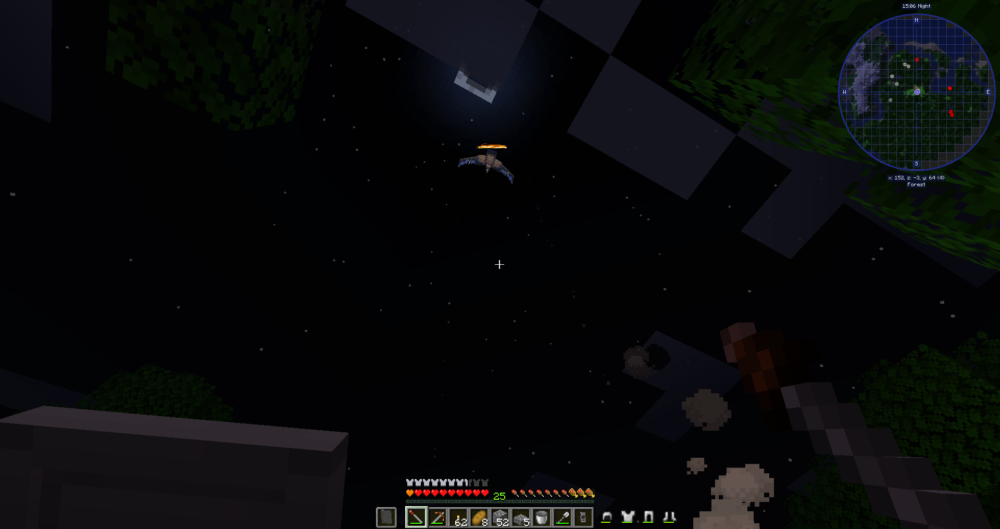
Some improvements in my camp for production allow me to begin setting the foundations for the museum, and waiting for the stone to cook I finally find enough diamonds to upgrade my mining strength! Things will get serious now that I can get obsidian to make a transmutation table. But first is a trip to the nether for glowstone, then everything is in place for the great alchemy! I burn every item with EMC then upgrade my tools with the best materials.
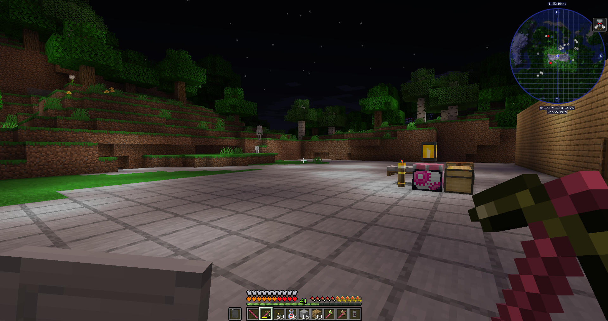
I relocate some necessities in the entrance staff-only area and alter my tablet to be portable. Things are moving now, quite literally! Progress is made easier and I gain access to a handful of useful tools, along with enchanting to boost my gear. Now that my tools self repair for free, I continue the terraforming and begin completing the live trees exhibits. This leads to my very first expedition to gather samples and a good way to map out the terrain around the museum.
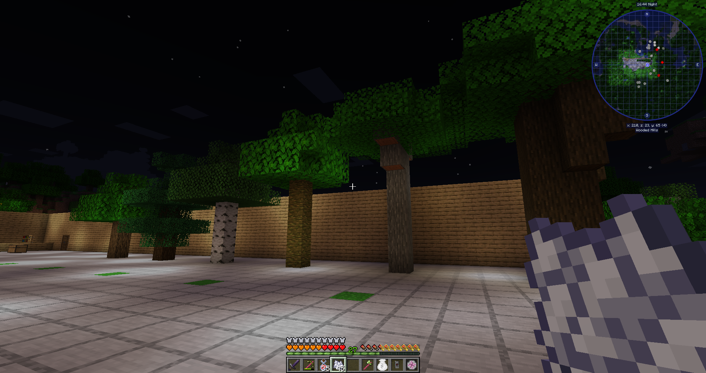
The First Seed
Reaching a dead lock for the remaining unlocked displays, I have no option but to continue the set up questline. Using the power of flight, it’s quite simple to raid the nether of all the needed resources. I don’t even have to bother with mob farming thanks to the farm blocks!
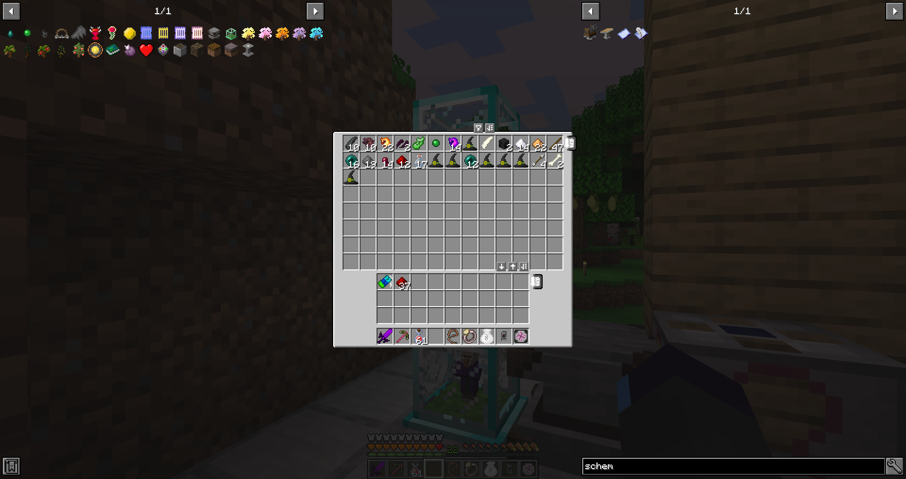
While this is running, I prepare a set of supremium armor and tools, waiting only on some extra enchantments before using them. I realize I can simply grow a giant pine tree to get the long needed podzol, and this sets off the peat generation for power! It’s mostly to make some crystals, but this is a good step nonetheless. I also try out the premade museum schematic, but realize I prefer keeping on doing my open air park(I wish we had wands though).
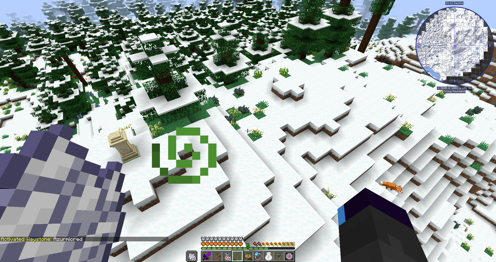
As things progress, there are more and more things getting stuck at reaching the End part, so I clear up the rest first. It is time for another gigantic expedition, gathering all the needed blossom saplings and some more things. Doing this paid back enough badges so I can open a new line in the quests! I had most of the other trees so I clear all the rows in a flash, with only a few harder to find(notably the maple tree which I ended up finding more easily in the giant taiga). All the trees done, it’s time to branch off to flowers and plants!
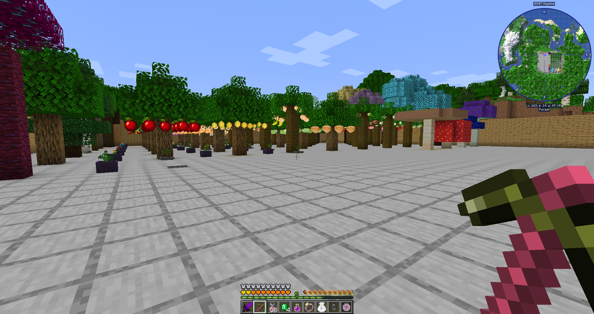
A very long time later, many hours exploring and I can say with certainty candleberries don’t drop, damnit. I hate having to do it, but to exceptional situation, exceptional measures - it didn’t even have an EMC value so it was strictly impossible to obtain. A quick magic trick and we can finish the gigantic list of crops.
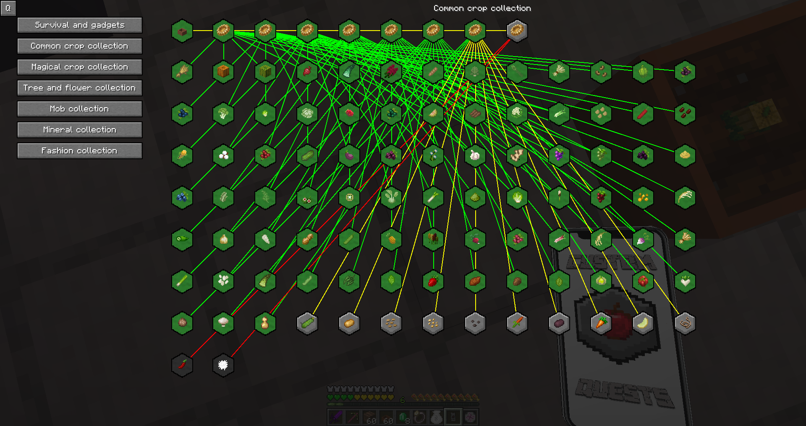
It Belongs in a Museum
The natural direction to go in now is the mystical agriculture crops, as they can bring new resources along. It requires me to make use of my different capturing and spawner tools to fill enough soul jars for the mob seeds, and even some unique adventures like capturing cartographers to find a temple or housing bees. Due to a handful requiring going to the end, I lack enough badges to unlock another row, so I set up additional displays for future sections and to access the last seeds.
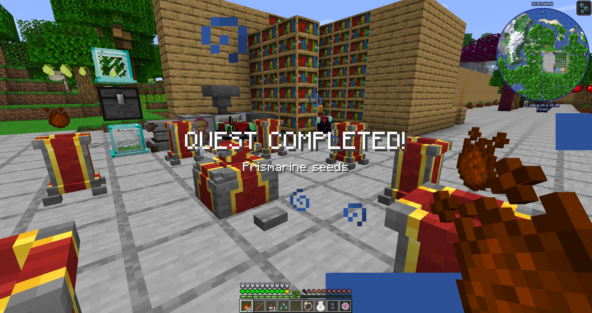
An outlier seed makes me touch a bit of Create to mix brass, then it’s wither time! I do it in the plains to grab some wither roses too, and crush him with my sword, getting the star will be a huge jump in progression. I switch to a full insanium set and add the augments to get night vision, integrated flight and more! Staying in that vein, I fill most of the armor stands with what I can, then decide to take the plunge into the end portal… The fight is somehow really awkward, the dragon sending me away during his roost move. After a drawn out patience game, he is defeated and I can claim all the rewards, as well as begin the final upgrades.
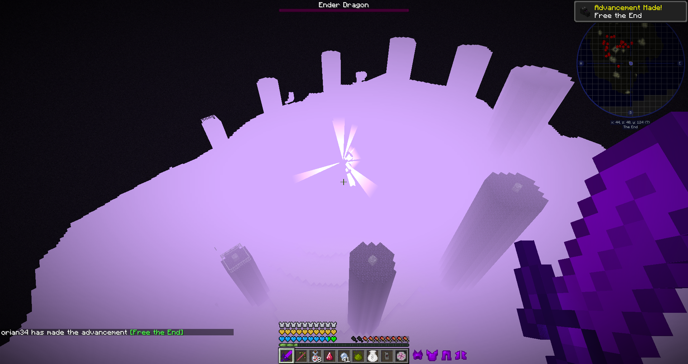
I finish some loose ends like using fishing traps for the full neptunium set or finding the last missing gem, then I go back for a second round with a bow. After a long flight to find a city, I get all the materials needed from the End; reaching the final steps of the basic setup quests. Using lilypads of fertility, I can have a boosted farm for the gem seed and gain a passive EMC income. While it is running, I fill up the minerals section and finish up the remaining tabs; only the mobs left!
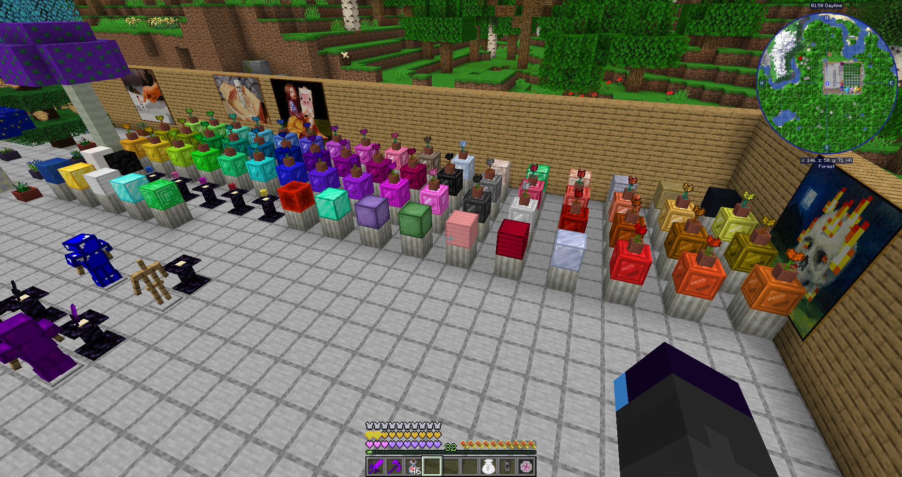
The final stage is upon us. After some consideration, I decide to display the items on pedestals instead of making a zoo, it’s more reasonable. Making the various eggs is mostly menial at this point, with all the mystical crops yielding what I need, only exception being the wisps which are an absolute pain to spawn. While waiting for chaos to happen, I start on the other branch and find most fishes from rivers and oceans. At this point, there’s not much else to do besides waiting for the last wisps and the special biome fishes which are a huge pain to spawn. Once this is done, the grand opening is ready to go!
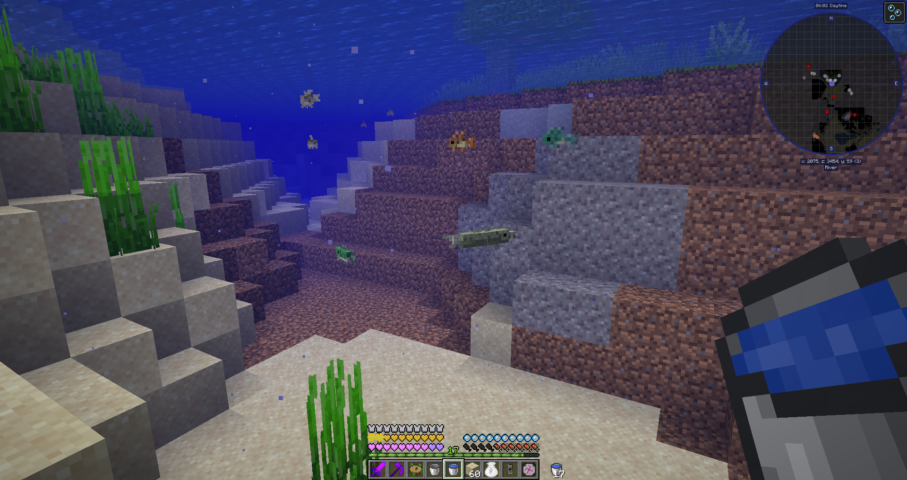
Conclusion
It was an interesting concept, but I feel like it lacked a little something to spice things. The mods added were too much variety without variation; aside being filler I didn’t feel like they were really bringing something. (In way, isn’t this exposing something for a few of those mods?) It would’ve been cool to have a more unique generation and ways to obtain the large variety, but that’d mean a ton of work for the pack.
It’s a bit paradoxical but I felt that there was too much dumped at once? Or that it would’ve been better with the collecting quests unlocked by default and having a more extensive progression quest for setting up the museum(PS: I don’t like the ultimate book, it defeats the fun even for an easy pack). It likely wasn’t helped by the laggy quest book that made for a clunky experience.
Anyway, it’s still great if you like to scratch that hoarding itch. Hopefully there’ll be renovations to make it even more pleasant later. Now I have to go because I can hear the first visitors!